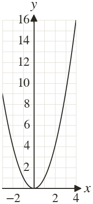

Westonbirt Maths · Quadratic Graphs and Inequalities
Solving Equations with Pre-Drawn Graphs
Name: ______________________ Date: ____________
1
The graph of is drawn. Draw a line to solve

2
To solve on the graph of Raj draws
Find his mistake and correct it.
Find his mistake and correct it.
3
Use the same graph to estimate the solutions of to decimal place.
4
The graph of is drawn. Draw a line to solve
5
How many solutions has ? Use the graph of
Ext
Find the value of for which the line just touches